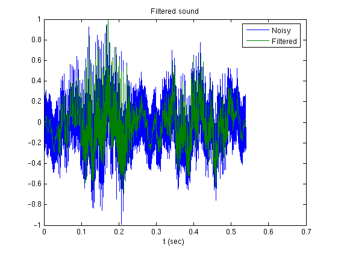

This demo shows how to use the parameters from a fixed-point MATLAB program in a fixed-point C program.
Finding the right parameters in a fixed-point C program can be difficult. But not today.
Suppose we have the following simple algorithm in M. It computes the running average of its input x using a weighting vector b, which has been given to us.
Note that the output y, is also used as an input parameter so that y can be aware of its data type.
function [y,z] = fi_m_fir(b, x, z, y) for k=1:length(x); z = [x(k);z(1:end-1)]; y(k) = b*z; end
We have translated the M function into this C function, and we need to figure out a number of things. How do we scale the integer inputs b, x, and z so they retain maximum precision? Will there be overflow when we run data through it? We are using native integer data types, but what if I have, say, 12-bit data? Which bits of the 16 are the 12-bits of data stored in? How do I compute the values of accOneHalfLSB and accShift that are used to round the 32-bit accumulator and shift into the 16-bit output?
void fi_c_fir(int16_T *b, int16_T *x, int16_T *z, int16_T *y,
int nb, int nx, int nz,
int32_T accOneHalfLSB, int accShift)
{
int32_T acc;
int k;
int i;
for (k=0; k<nx; k++) {
memmove(z+1,z,sizeof(int16_T)*nz);
z[0] = x[k];
acc = 0;
for (i=0; i<nb; i++) {
acc += (int32_T)b[i] * (int32_T)z[i];
}
y[k] = (acc + accOneHalfLSB) >> accShift;
}
}The answer to all of the above questions is: Define the word lengths of the variables and let fi worry about everything else.
b = fi_fir_coefficients; % Vector b is given to us. rand('state',0); N = 20; x = 2*rand(N,1)-1; z = zeros(length(b),1); y = zeros(size(x));
yfl = fi_m_fir(b, x, z, y);
The attributes of our fixed-point parameters have been set up in this example so that we can set the word lengths and let fi figure out the best scaling for the fraction lengths (binary points) in the data, in the product register, in the sum register (accumulator), and there is even a convenient function to compute the numeric type of the output of this algorithm that will retain best precision in the output and at the same time guarantee that no overflows occur.
Of course, we can always go in and fully specify all these scaling parameters ourselves, but then every time we changed any word length, we would have to go through and adjust all the other parameters too.
It is hard to overstate how much work this saves us. If we want to change the simulation to use 12-bit coefficients and 8-bit data, we just need to change those word lengths. If the data is given to us as integers, or as floating-point values, the best scaling is used to store the data, and then the scaling of all related computations are changed automatically.
In the following, we are saying "effective word length" because when we get to the C program, the data are stored in 16-bit integers, and the product and sum are stored in 32-bit integers. However, the M-file fixed-point algorithm will use the effective word lengths as specified for any value from 2 to 65535 bits. The C algorithm will act as though those are the actual word lengths from 2 to 16- and 32-bits, respectively. This is very convenient for simulating fixed-point algorithms on your desk top computer that will run on an embedded device with word lengths different than the standard 8, 16, and 32 bits.
Wb = 16; % Effective word length of the coefficients, b Wx = 12; % Effective word length of the data, x Wy = 16; % Effective word length of the output, y Wprod = 32; % Effective word length of the product (int32_T)b[i] * (int32_T)z[i] Wacc = 32; % Effective word length of the sum stored in int32_T acc
We configure so that the products and sums are aligned in the least-significant bits, and the overflow mode is wrap, as it would is in C.
F = fimath('ProductMode','KeepLSB', 'ProductWordLength',Wprod,... 'SumMode','KeepLSB', 'SumWordLength',Wacc,... 'OverFlowMode','wrap');
bfi = fi(b, 1, Wb, 'fimath', F); xfi = fi(x, 1, Wx, 'fimath', F); zfi = fi(z, numerictype(xfi), 'fimath',F);
Compute the number of integer bits necessary for no overflow in the inner product b*z. Then leave that much head room in y.
y_fractionlength = Wy - innerprodintbits(bfi,zfi);
yfi = fi(y, 1, Wy, y_fractionlength, 'fimath', F);
yfi = fi_m_fir(bfi, xfi, zfi, yfi);
Note that the lines in the plot overlay each other. If you are running this program, and have stopped at this point, you can zoom in on the graph and see that the values are slightly different.
t = 0:length(y)-1; plot(t,yfl,t,yfi);set(gcf,'color',[1 1 1]); legend('Floating-point','Fixed-point') xlabel('t (samples)')
Plot the error and compare with the scaling of the least-significant bit of the fixed-point value centered around the mean of the error.
err = double(yfi) - yfl; m = mean(err); delta = double(lsb(yfi)); tlim = [0 t(end)]; plot(t,err,tlim,[m m],tlim,m-delta*[1 1],'r',tlim,m+delta*[1 1],'r') set(gcf,'color',[1 1 1]); legend('Error','Mean of the error','1 LSB about the mean') xlabel('t (samples)')
Our C program is expecting 16-bit signed integers, so we cast to that specific type.
bint = int16(bfi); xint = int16(xfi); zint = int16(zfi);
In particular, we need to know where the binary point is so that we will know what part of the accumulator to pluck the output data from.
acc = bfi*zfi
acc =
0
DataType: Fixed
Scaling: BinaryPoint
Signed: true
WordLength: 32
FractionLength: 27
RoundMode: round
OverflowMode: wrap
ProductMode: KeepLSB
ProductWordLength: 32
SumMode: KeepLSB
SumWordLength: 32
CastBeforeSum: true
yint = fi_c_fir(bint, xint, zint, acc.fractionlength, y_fractionlength);
[int16(yfi) yint int16(yfi)-yint]
ans =
-151 -151 0
154 154 0
714 714 0
-2064 -2064 0
1556 1556 0
1564 1564 0
2956 2956 0
25 25 0
-831 -831 0
224 224 0
8333 8333 0
1082 1082 0
-263 -263 0
-3229 -3229 0
-696 -696 0
1175 1175 0
2968 2968 0
4048 4048 0
7600 7600 0
1280 1280 0
Now that we're fairly confident that our C program is doing the right thing, let's do something useful with it.
Load a sound file and listen to it. Also see if the Signal Processing Toolbox is available so we can analyze these signals later.
isSignalToolboxAvailable = license('test','Signal_Toolbox'); load mtlb x = mtlb; n = length(x); t = (0:n-1)'/Fs; soundsc(x,Fs)
plot(t,x) set(gcf,'color',[1 1 1]); xlabel('t (sec)') title('Original sound')
if isSignalToolboxAvailable specgram(x,512,Fs); set(gcf,'color',[1 1 1]); title('Original sound') end
xfi = fi(x,1,Wx); soundsc(double(xfi),Fs)
Let's take a look at the frequency response of the moving average filter defined by vector b. Notice that there is a null in the frequency response at about 2140 Hz. This means that any sound at 2140 Hz will be averaged out if it is run through the moving-average algorithm. The 2140 Hz frequency is relative to the sampling frequency, Fs, that was used when the sound was recorded.
if isSignalToolboxAvailable freqz(b,1,1024,Fs); set(gcf,'color',[1 1 1]); end
Since my algorithm will filter out any signal at 2140 Hz, let's add a sinusoid at that frequency to the original signal and see if we can filter it out with our fixed-point moving-average algorithm written in C.
N = length(x); noise = sin(2*pi*2140*(0:n-1)'./Fs); xnoisy = x + noise;
xfi = fi(xnoisy,1,Wx); soundsc(double(xfi),Fs);
plot(t,xfi) set(gcf,'color',[1 1 1]); xlabel('t (sec)') title('Quantized, noisy sound')
if isSignalToolboxAvailable specgram(double(xfi),512,Fs); set(gcf,'color',[1 1 1]); title('Quantized, noisy sound') end
zfi = fi(z, numerictype(xfi), 'fimath',F);
acc = bfi*zfi;
y_fractionlength = Wy - innerprodintbits(bfi,zfi);
Can you still hear the noise signal? Can you tell any other differences in the sound?
xint = int16(xfi); yint = fi_c_fir(bint, xint, zint, acc.fractionlength, y_fractionlength); soundsc(double(yint),Fs)
If you are running this demo and have paused at this section, zoom in on the plot. Can you see the high frequency noise in the original signal? Can you see that it has been smoothed out in the filtered signal?
Notice that the filtered signal has been delayed in time. Can you tell by how much? How is the time delay in samples related to the length of b?
The signals are scaled to make them easier to compare.
xscaled = double(xint); xscaled = xscaled/max(abs(xscaled)); yscaled = double(yint); yscaled = yscaled/max(abs(yscaled)); plot(t,[xscaled yscaled]) set(gcf,'color',[1 1 1]); legend('Noisy','Filtered') xlabel('t (sec)') title('Filtered sound')
if isSignalToolboxAvailable specgram(double(yint),512,Fs); set(gcf,'color',[1 1 1]); title('Filtered sound') end
Open this demo in the MATLAB editor by typing
edit fi_c_developmentdemo.m
from the MATLAB command line.
Then, go back up to the top and modify the word length parameters and step through the code using "cell mode" in the editor.
Try these values:
Wb = 8; % Effective word length of the coefficients, b Wx = 8; % Effective word length of the data, x Wy = 8; % Effective word length of the output, y Wprod = 32; % Effective word length of the product (int32_T)b[i] * (int32_T)z[i] Wacc = 32; % Effective word length of the sum stored in int32_T acc
What was the error like? What did it sound like?
The C file is located in the same directory as the M-file. You can open it by typing
edit fi_c_fir.c
from the MATLAB command line. If you have MATLAB configured for a C compiler, you can compile this file by typing
mex fi_c_fir.c
from the MATLAB command line. For more information on compiling mex files, type
help mex doc mex
from the MATLAB command line.
The implementation of the algorithm in C that we are using in this demo was done for clarity: it's structure is very much like the algorithm in M. Can you modify the C algorithm so that it runs faster?